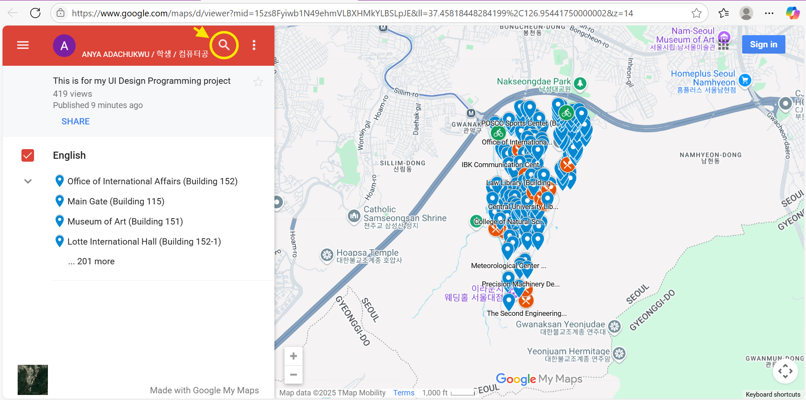
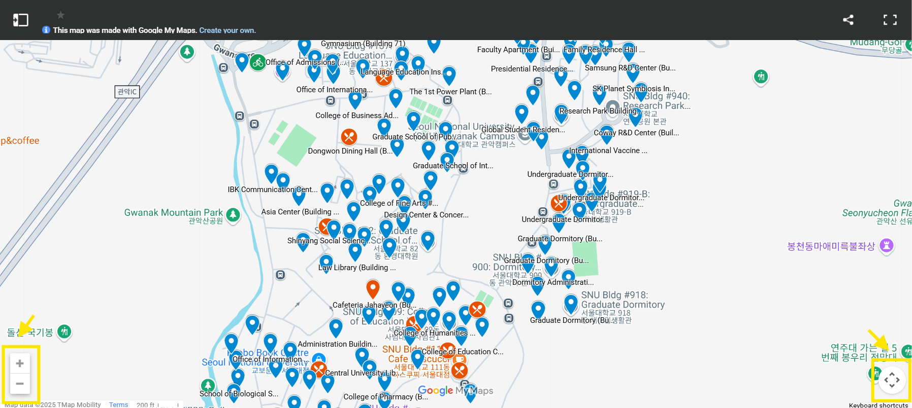
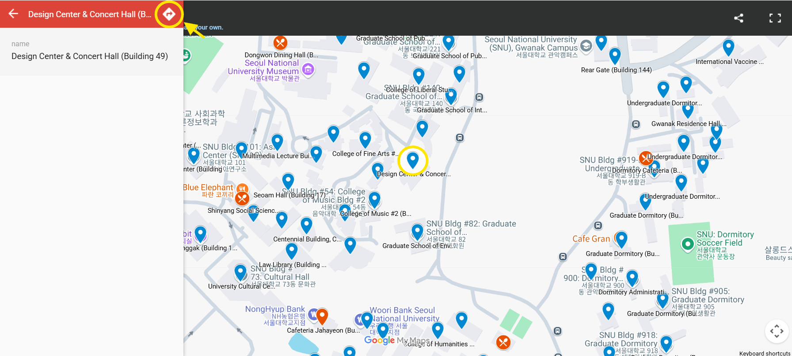
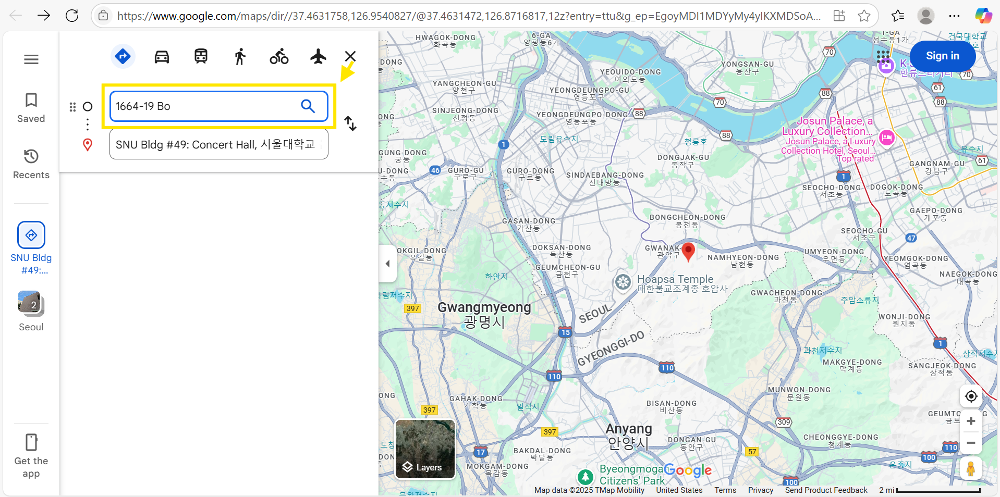
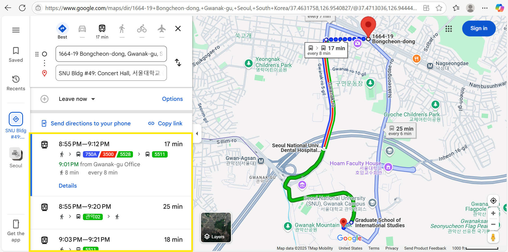

Once the map website opens, click the search button. You'll be able to use the number or English name of the building to find its location on campus. 
1. Navigate the map using your mouse or the navigation buttons

2. Click on the destination pin, then click on the direction button

3. Put your address as the origin

4. Select your desired route to the destination
